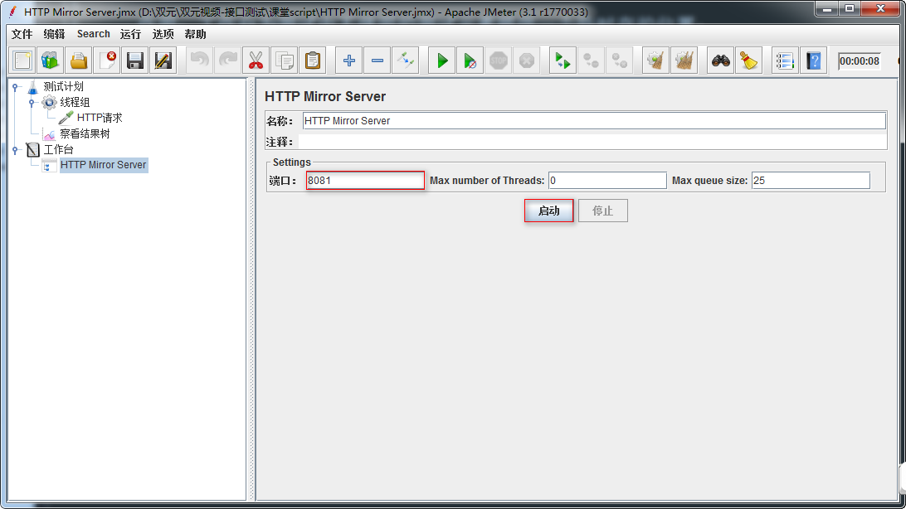
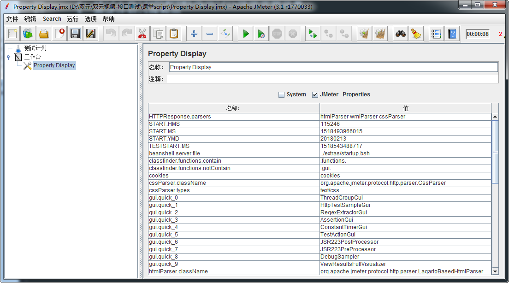

Jmeter 工作台-非测试元件
目标
1. 了解Jmeter工作台作用
2. 了解Jmeter工作台下非测试元件
1. 工作台
1.1 工作台有什么用？
作用：工作台为测试中不使用的测试元素提供一个临时存的位置；
目的：是提供复制/粘贴或者其他目的。
提示：保存测试计划工作台的内容默认不会保存除非选择”save workbench”（保存工作台）选项
1.2 非测试元件分类
1. HTTP Mirror Server
2. HTTP代理服务器
3. Property Display
2. HTTP Mirror Server
2.1 HTTP Mirror Server有什么用？
作用：它可以在本地临时搭建一个HTTP服务器，该服务器把接收到的请求原样返回;
这样就可以看到发送出的请求的具体内容，以供调试;
2.2 HTTP Mirror Server配置使用图

1. 端口号：默认搭建临时HTTP服务器端口为8081，可自定义修改(未占用端口号);
2. 启动：点击启动，启动HTTP临时搭建的服务
2.3 HTTP请求使用HTTP Mirror搭建服务器图
 服务器名称或IP：为本机IP(127.0.0.1) 端口号：为搭建HTTP临时服务器时的端口号
服务器名称或IP：为本机IP(127.0.0.1) 端口号：为搭建HTTP临时服务器时的端口号
2.4 HTTP Mirror Server-总结
1. HTTP Mirror Server作用
2. 使用方法
3. HTTP代理服务器
3.1 为什么要了解HTTP代理服务器?
3.2 需求
使用Jmeter测试http://www.so.com搜索引擎,搜索测试，搜索三个关键字Java
、python、Test]
3.3 问题
1. 如何使用Jmeter录制HTTP协议的Web程序脚本？
3.4 HTTP代理服务器是什么？
概念：HTTP代理服务器是监听浏览器代理，记录基于代理浏览器所有的请求，并以Jmeter可执行的脚本格式保存。
3.5 解决方案分析
1. 工作台->非测试元件->HTTP代理服务器
2. IE->工具->Internet选项->代理服务器设置
3. 测试计划->线程组
3.6 HTTP代理服务器配置图

1. 端口号：可自定义端口(未必占用的端口号)
2. 目标控制器：选择录制的脚本要保存的地方,比如：测试计划-线程组
3. 启动：启动监听程序
3.7 HTTP代理服务器-总结
1. HTTP代理服务器作用
2. HTTP代理服务器设置
3. IE代理设置
4. Property Display

作用：以GUI图形界面显示Jmeter配置文件(jmeter.properties)